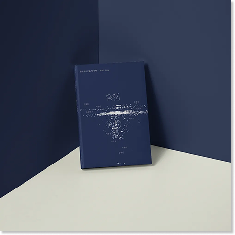
홍글동 문집 '유영' 출판
교내 문학상 대상을 받은 작품을 실은 문집으로, 원고 교정·조판, 제작비·일정 확정, 펀딩 페이지 제작과 홍보 계정 운영, 독립서점 입고까지 진행했습니다.
176%텀블벅 펀딩 달성률, 다수 독립서점 입점
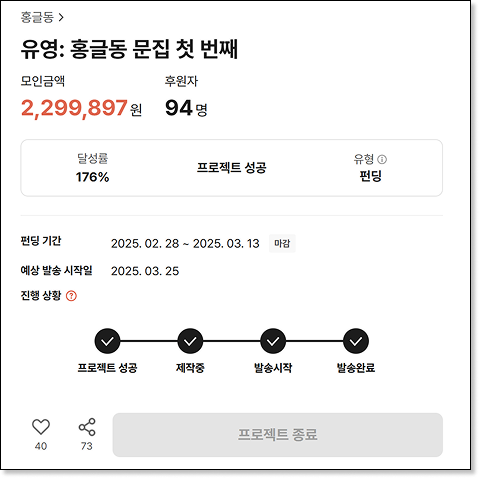
전재현 Jun Jaehyun — Marketer
마케터 전재현입니다.
데이터에 숨은 소비자의 니즈를 찾아내고,
데이터를 가져올 도구까지 직접 만듭니다.
Profile
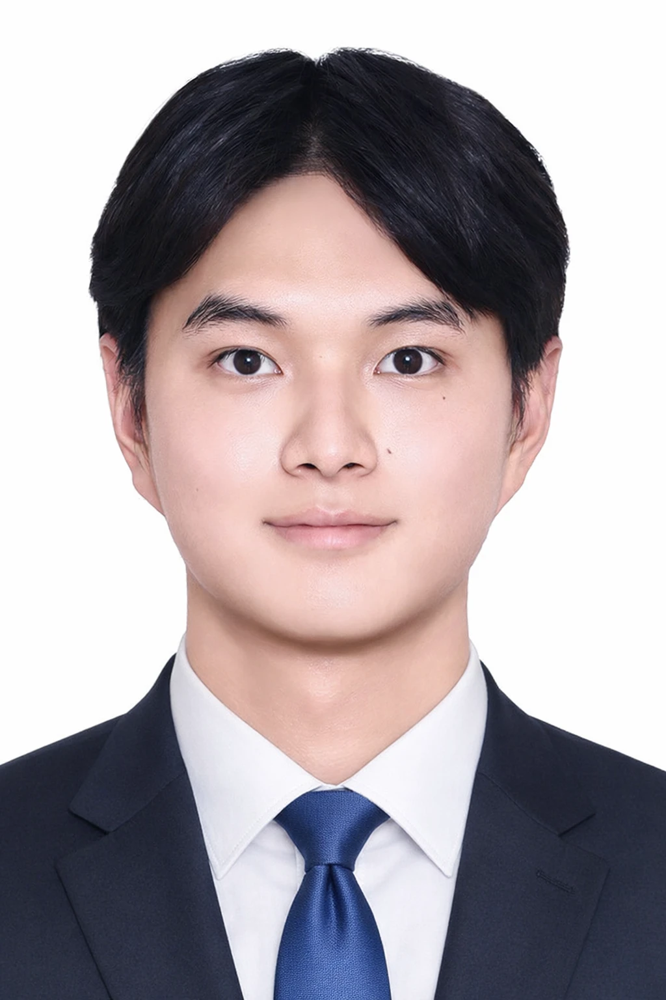
프리즘커뮤니케이션 / 혼다코리아
유료 분석 서비스의 요약본에 의존하던 경쟁사 분석을, 직접 만든 크롤러로 원본 데이터 기반으로 바꿨습니다.
Python으로 Chromium 브라우저를 직접 띄워, 로그인한 상태로 자사·경쟁사 인스타그램 게시물을 모으는 크롤러입니다. 브라우저를 화면에 띄워둔 채 수집해 이상 동작을 바로 확인할 수 있게 했고, 수집 속도에는 딜레이를 두었습니다. 팔로워 수 기록은 배치 파일과 작업 스케줄러로 매일 자동 실행됩니다.
경쟁사의 저장·공유 수와 도달은 볼 수 없었습니다. 자사 데이터에서 해당 지표의 평균 비율을 구해 경쟁사에 적용하고, 보정치를 적용했다는 사실을 고객사 보고서에 명시했습니다.
유료 서비스 사용 중단, 내부 도구로 대체
요약본 대신 원본 데이터 확보: 경쟁사 평균 참여율, 업로드 주기, 최근 게시물 전량
분석 범위 확대: 자사·경쟁사 발행량 차이, 발행량 대비 반응, 해시태그로 본 경쟁사 이벤트와 참여율
GitHub에 올려 다른 프로젝트(@satan.mag, 웹소설 시장 분석)에도 재사용
스튜디오 지브리展 in Jeju: 네이버 플레이스, 카카오맵, 야놀자, 구글 리뷰 수집
배치 파일과 작업 스케줄러로 경쟁사 팔로워 수를 매일 자동 기록
OB맥주 크리에이티브 공모전 · 2025.06 ~ 08 · 전국 마케팅 공모전(팀장)
프리미엄 맥주가 파는 '프리미엄'과 2535가 맥주를 마시는 방식 사이의 거리를 좁힌 캠페인
국내/수입 맥주를 모아 각 브랜드가 어떤 '프리미엄'을 내세우는지 정리했습니다. 이 과정에서 스텔라 아르투아의 핵심 소구점이 '고급 안주와의 페어링', '직접 가게나 탭샵을 방문하여 식사하는 것'이라는 점을 확인했습니다.
브랜드가 지향하는 맥주의 소비 패턴과 지정된 2535 타깃의 맥주 소비 패턴은 달랐습니다. 그들은 편의점 네 캔 만 원으로 맥주를 사서 집에서 마시는 경향이 강했습니다.
마시는 장소가 집이라면, 스텔라다움을 집으로 가져가면 된다고 판단했습니다. 그래서 스텔라의 상징인 전용잔을 소비자의 집에 보급하는 것을 캠페인의 축으로 잡았습니다.
아이디어 중 가장 설득력이 높았던 크리스마스 마켓 콘셉트의 팝업스토어를 기준점으로 삼아, 인지-체험-확산-락인으로 이어지는 소비자 여정 지도를 그렸습니다.
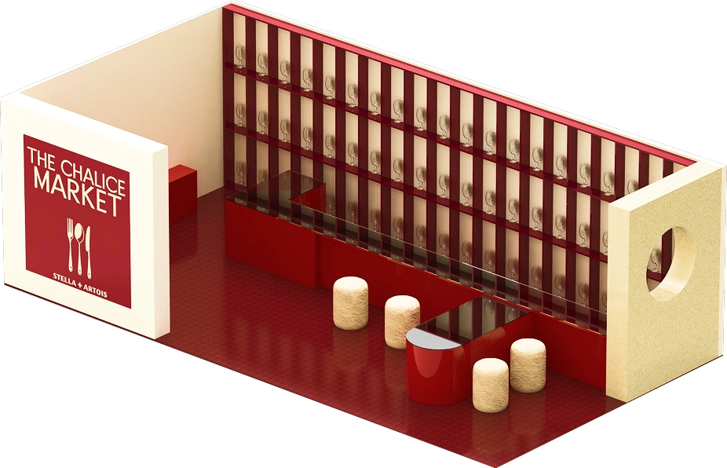
330팀 중 10위, 파이널리스트
처음에는 수제맥주의 성장이 프리미엄 맥주의 자리를 가져갔다고 봤습니다. 하지만 수제맥주 시장 역시 침체 중이라는 것을 확인하고, 경쟁자가 바뀐 것이 아니라 맥주를 마시는 방식이 바뀐 것이라고 결론을 고쳤습니다.
브랜드 헤리티지와 팝업 콘셉트의 결합, 높은 실현 가능성
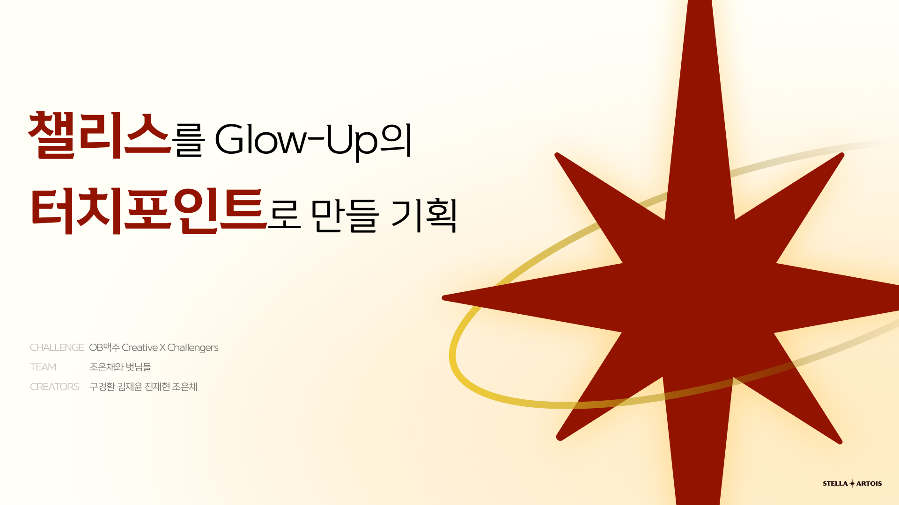
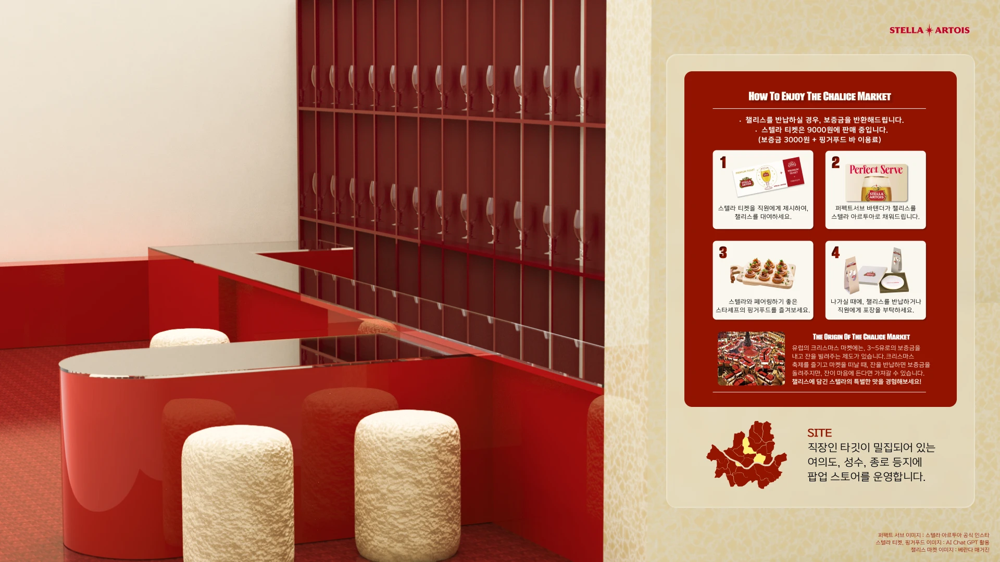
대홍 크리에이티브 어워즈 · 2025.06 ~ 07 · 전국 마케팅 공모전(팀장)
'여름 속옷'에 갇힌 에어리즘을, 오래 입어 정이 드는 '애착 옷'으로 넓힌 캠페인
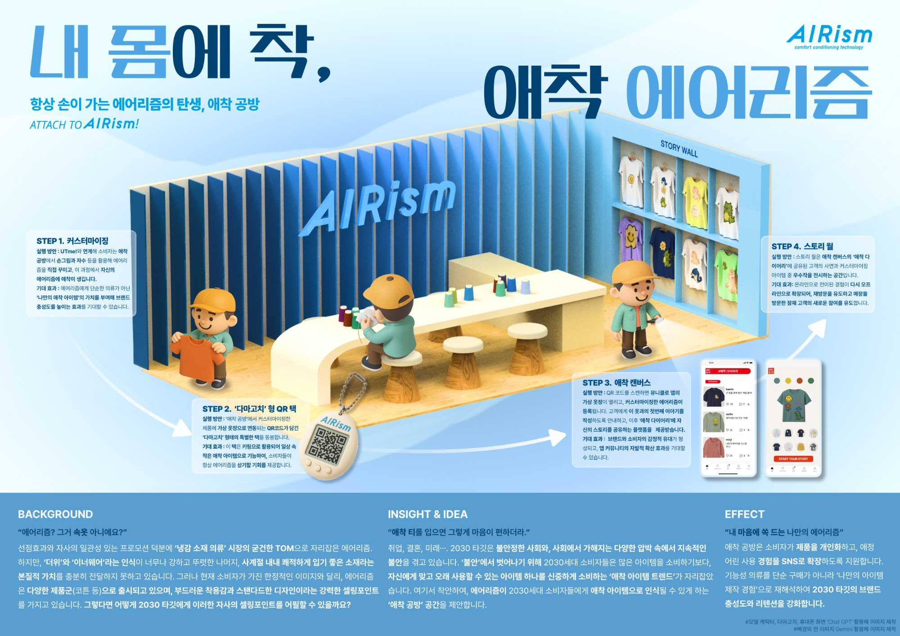
과제는 에어리즘의 핵심인 땀 관리 기능은 살리되, 활동복이나 이너웨어가 아닌 영역으로 브랜드를 넓히는 것이었습니다. 책상 앞에서는 방향이 잡히지 않아, 실마리를 찾으려 매장을 직접 찾았습니다.
코튼 라인은 따로 진열되어 있었지만, 에어리즘은 속옷 진열대에 놓여 있었습니다. 매장에서조차 에어리즘은 하나의 브랜드가 아니라 속옷의 한 종류로 다뤄지고 있었습니다.
이후 진행한 FGI에 해질 정도로 입은 바지를 입고 온 참여자가 있었습니다. 그 바지를 "애착 바지"라고 소개하는 것을 듣고, 편하고 튼튼해서 오래 입게 되는 옷이라는 에어리즘의 성격과 연결했습니다.
무인양품의 커스텀 서비스와 유니클로 UTme!를 참고해, 고객이 직접 자신의 애착 옷을 만드는 경험을 설계했습니다. 팝업 대신 유니클로 매장 안에서 즐길 수 있는 여러 테마의 체험을 제안해, 구매 과정 자체에 브랜드 경험을 넣고 산 옷에 자연스럽게 애착이 생기도록 했습니다.
1,300팀 중 80팀 선발
('세상에 나쁜 아이디어는 없다')
재치 있는 캠페인명, 방문하고 싶은 브랜드 공간
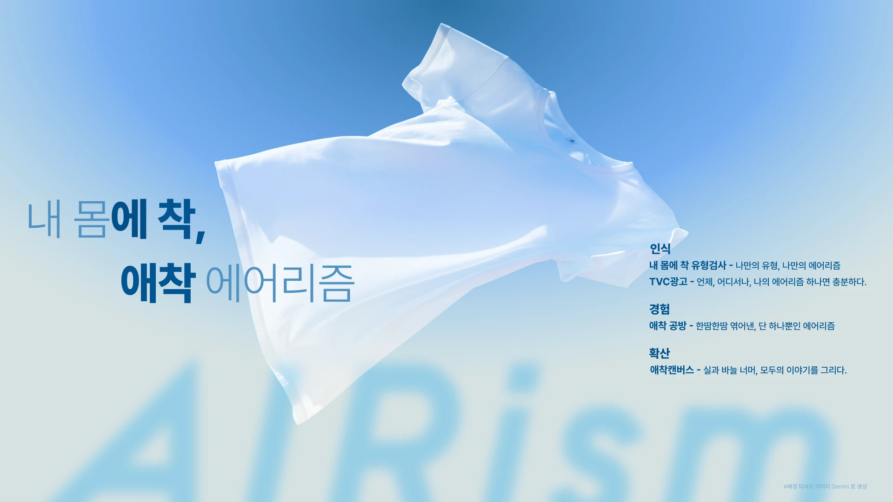
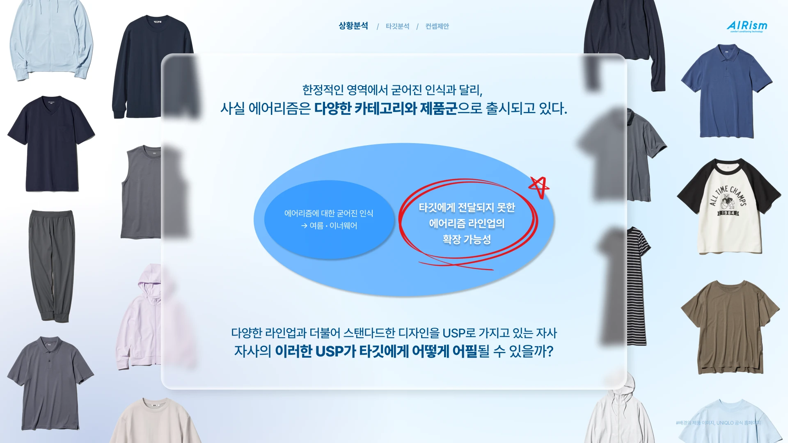
TEAM 積み木 · 국비교육 일본어반 1차 프로젝트
국비교육 일본어반 1차 프로젝트. 일본어를 공부하며 느낀 불편을 직접 해결한 JLPT 한자 학습 웹앱
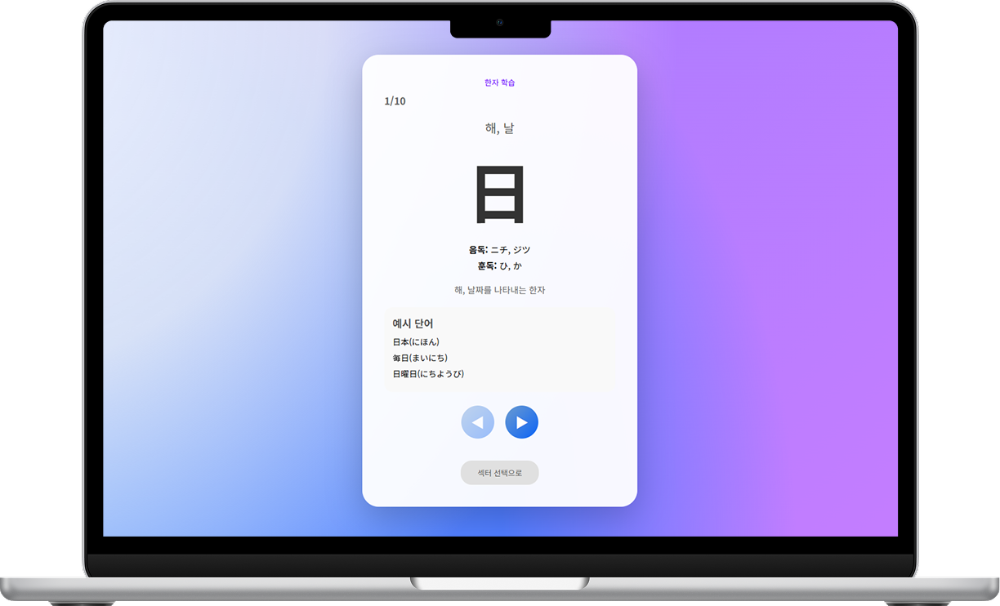
일본어반 수강생으로서 직접 한자를 외우며 겪은 불편에서 출발했습니다. 기존 서비스 세 곳을 비교해 장점은 가져오고 빈 곳을 채웠습니다.
로그인 → 메인 → 레벨 선택 → 섹터 공부 → 섹터 테스트, 그리고 오답 공부·누적 테스트와 마이페이지로 이어지는 흐름을 먼저 그린 뒤 기능을 나눴습니다.
JLPT 시험 범위를 기준으로 크롤링한 한자 데이터를 레벨-섹터 단위로 나눠, 하루 한 섹터를 끝낼 수 있는 양으로 조절
정답·오답·모름을 즉시 표시하고 기록을 저장. 한 섹터를 끝내면 출석 체크
진척도, 정답률, 연속 학습일, 레벨별 남은 학습량 표시
회원·학습 로그·한자 테이블을 분리하고, 로그 테이블이 회원과 한자를 잇는 구조
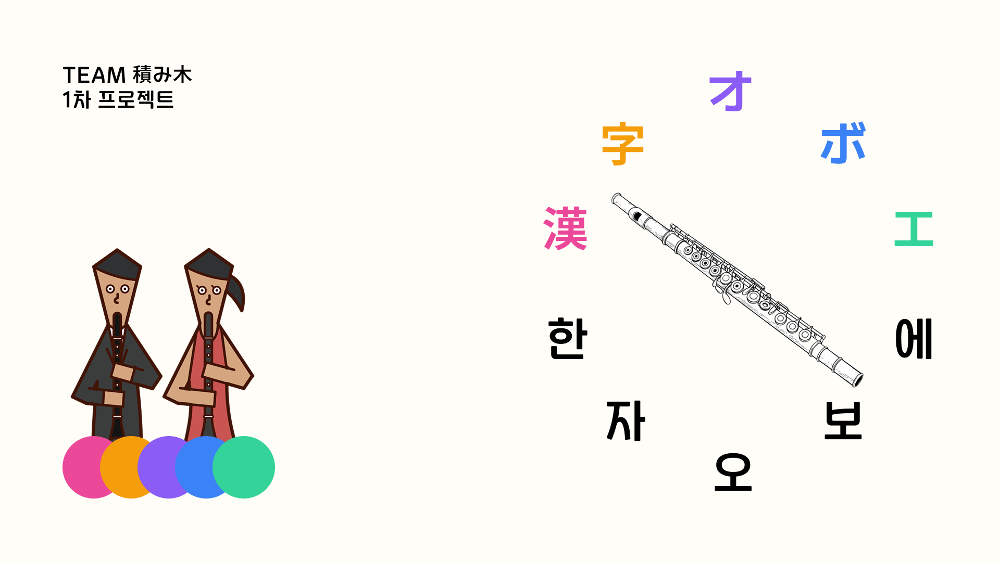
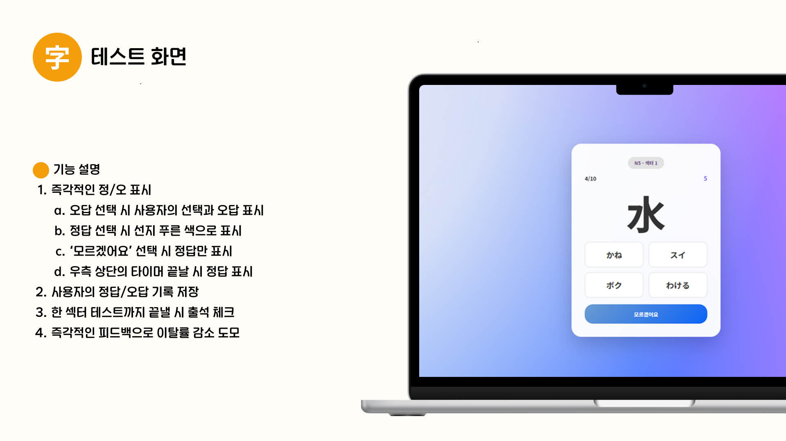
역할 분담과 작업 환경(스크립틀릿·서블릿) 정의가 늦어 혼선이 생겼습니다. 이후에는 기획서를 더 구체적으로 쓰고, 작업 환경을 먼저 합의하는 것을 원칙으로 삼았습니다.
중복 작업, 브랜치 통합, 덮어쓰기 문제를 통합 담당으로서 직접 겪었습니다. 브랜치 사용 규칙과 잦은 공유 회의의 필요성을 배웠습니다.
2023.12 ~ 2024.12 · 인스타그램 매거진 공동 운영 · 에디터
음악·만화·영화를 깊게 다루는 서브컬처 매거진을 운영하며, 시험 게시물의 반응 데이터로 콘텐츠 방향을 정했습니다.
*실제 종교·악마와는 관련이 없습니다.기존 매거진보다 훨씬 깊이 있는 음악·만화·영화와 국내외 밈, 인터넷 문화를 다뤘습니다.
초기에는 당시 유행하던 서브컬처 매거진들을 일부러 비트는 콘셉트로 운영했습니다.
*투메: Too Major의 줄임말. '너무 유명한 것을 소비한다'는 뜻으로, 힙스터에게 할 수 있는 최고의 비난자극적이고 흥미로운 정보를 독특하고 감각적인 레이아웃에 담았습니다.
팔로워(최고점 기준)
1.2만
팀 리더(디자이너)를 설득해 시험 삼아 밈 게시물을 올리고, 그 반응 데이터를 바탕으로 직접 기획·기고한 게시물이 알고리즘에 올라 계정 최다 좋아요·공유 수를 기록했습니다.
당시 활동하던 동아리에서 음악·만화·영화에 밝은 에디터를 직접 섭외했습니다.
국내외 매거진을 분석해 게시물 템플릿과 레퍼런스를 확보했습니다.
Output
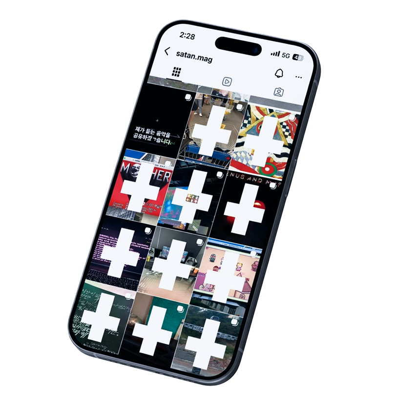
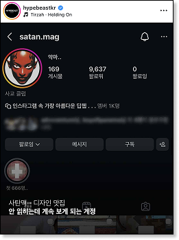
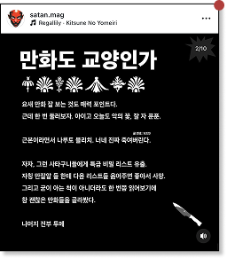
최다 좋아요 게시물
30K+
최다 공유 수
8.1K+
Etc.

교내 문학상 대상을 받은 작품을 실은 문집으로, 원고 교정·조판, 제작비·일정 확정, 펀딩 페이지 제작과 홍보 계정 운영, 독립서점 입고까지 진행했습니다.
176%텀블벅 펀딩 달성률, 다수 독립서점 입점

Contact
jaehyunjun00@naver.com ↗